Prerequisiti
Non è richiesta alcuna conoscenza preliminare di C++. Servono solo un PC Windows e una connessione internet. Verifica di avere tutto prima di procedere.
Software da scaricare
pacman per installare e aggiornare g++, gdb e make esattamente come su Linux.
VS Code e MSYS2
1 — Installare Visual Studio Code
VS Code è un editor di codice open-source sviluppato da Microsoft. È gratuito, leggero e supporta decine di linguaggi.
- Vai su code.visualstudio.com e clicca su "Download for Windows".
- Avvia il file scaricato (
VSCodeSetup-x64-*.exe) e segui l'installazione guidata. - Nella schermata "Select Additional Tasks" seleziona:
- ✅ Add "Open with Code" to Windows Explorer file context menu
- ✅ Add "Open with Code" to Windows Explorer directory context menu
- ✅ Register Code as an editor for supported file types
- Clicca Install e attendi il completamento.
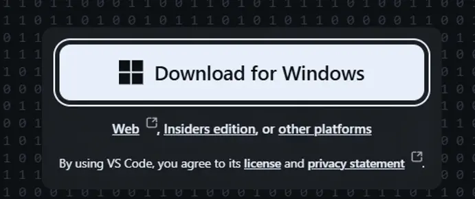
2 — Installare MSYS2
MSYS2 è l'ambiente che porta su Windows il toolchain di compilazione GNU, incluso il gestore di pacchetti pacman.
- Vai su msys2.org e scarica l'installer (
msys2-x86_64-*.exe). - Avvia l'installer e mantieni il percorso predefinito
C:\msys64. - Al termine dell'installazione lascia attiva la spunta "Run MSYS2 now" e clicca Finish.
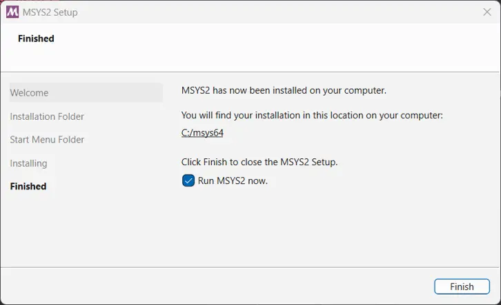
3 — Installare g++, gdb e make
Nel terminale MSYS2 UCRT64 appena aperto, installa l'intero toolchain con un solo comando:
pacman -S --needed base-devel mingw-w64-ucrt-x86_64-toolchain
- Alla domanda "Enter a selection (default=all)" → premi Invio.
- Alla domanda "Proceed with installation? [Y/n]" → digita Y e premi Invio.
- Attendi il completamento del download (qualche minuto).
- Verifica l'installazione con i tre comandi seguenti, uno alla volta:
g++ --version gdb --version make --version
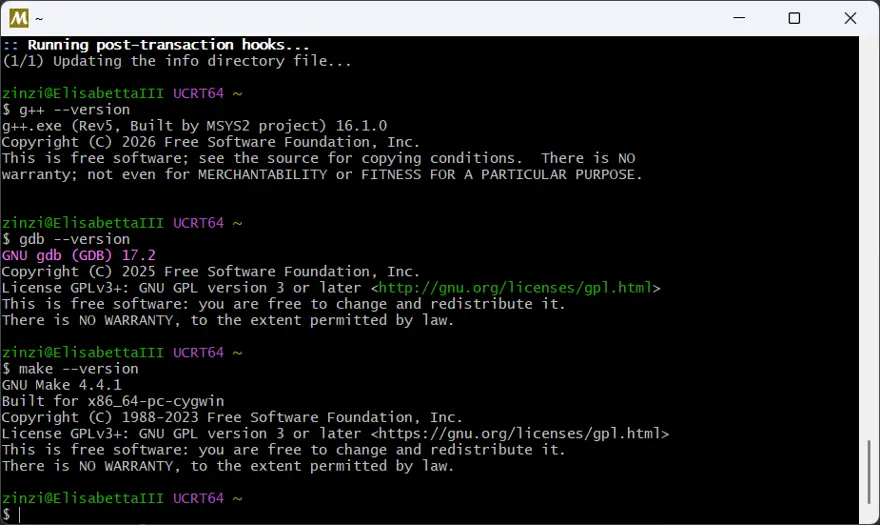
PATH e verifica
4 — Aggiungere g++ al PATH di Windows
Windows non sa ancora dove trovare g++. Dobbiamo aggiungere
C:\msys64\ucrt64\bin alla variabile di sistema Path
— l'elenco delle cartelle in cui Windows cerca i programmi eseguibili.
- Premi Win e digita variabili d'ambiente. Clicca su "Modifica le variabili d'ambiente del sistema".
- Nella finestra "Proprietà del sistema" clicca su "Variabili d'ambiente…".
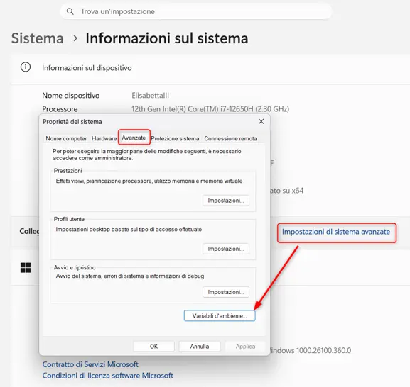
- Nella sezione Variabili di sistema (in basso), seleziona Path e clicca "Modifica…".
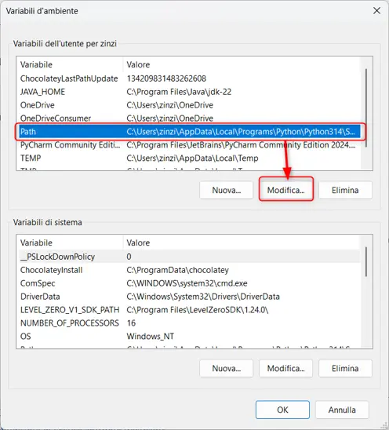
- Clicca "Nuovo" e inserisci esattamente:
C:\msys64\ucrt64\bin
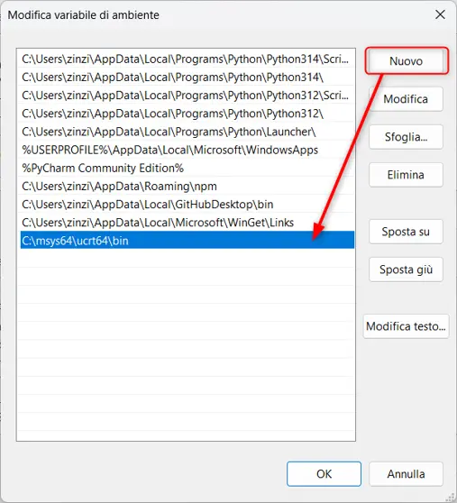
C:\msys64\ucrt64\bin come nuova voce nella variabile Path- Clicca OK su tutte le finestre aperte.
5 — Verificare l'installazione
Dopo il riavvio, apri il Prompt dei comandi (Win+R → cmd → Invio) e lancia:
g++ --version gdb --version
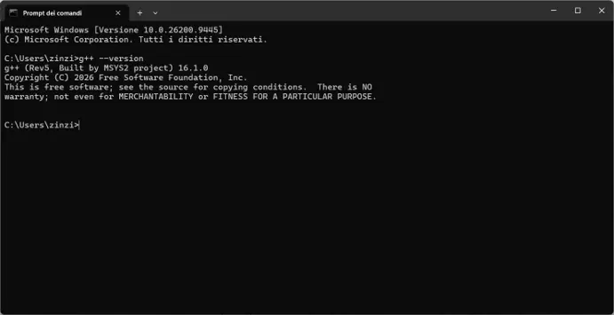
g++ è riconosciuto dal Prompt dei comandi di WindowsC:\msys64\ucrt64\bin sia nella variabile di sistema Path (non utente), che MSYS2 sia installato in C:\msys64 e che tu abbia riavviato il PC dopo aver modificato il PATH.
Estensione C/C++ e Hello, World!
6 — Installare l'estensione C/C++
VS Code è un editor generico. L'estensione ufficiale Microsoft aggiunge IntelliSense, evidenziazione della sintassi e supporto al debugger.
- Apri VS Code.
- Clicca sull'icona Extensions nella barra sinistra o premi Ctrl+Shift+X.
- Cerca C/C++ e installa l'estensione di Microsoft (la prima, con milioni di download).
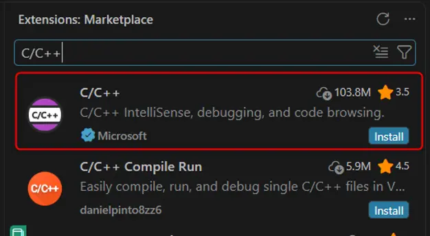
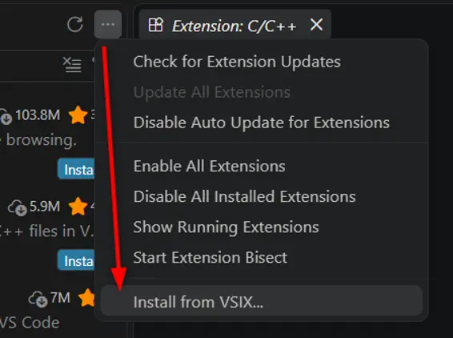
7 — Hello, World!
Creiamo il primo programma C++. Crea una cartella dedicata (es. C:\progetti-cpp), aprila con File → Apri cartella… in VS Code e crea un file hello.cpp.
Al primo utilizzo VS Code potrebbe chiedere di selezionare il compilatore:
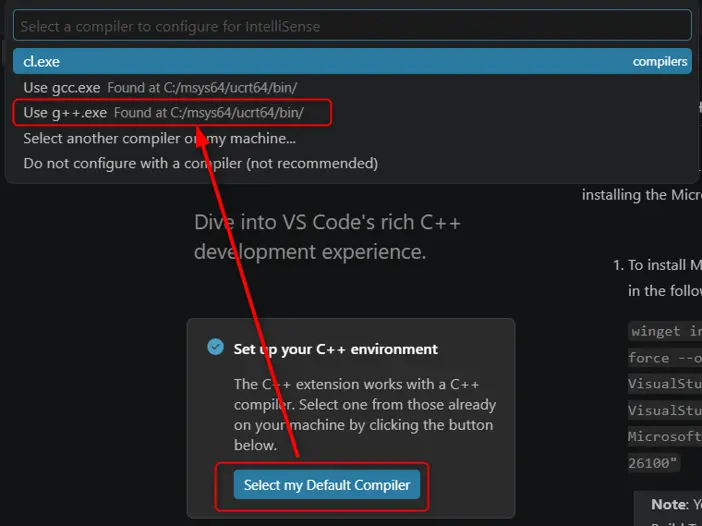
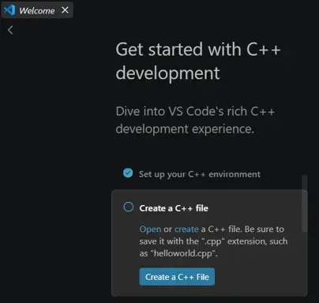
Scrivi il codice nel file hello.cpp:
#include <iostream> int main() { std::cout << "Hello, World!" << std::endl; return 0; }
Apri il terminale integrato (Ctrl+`) e compila:
g++ hello.cpp -o hello .\hello
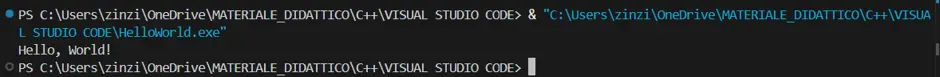
-Wall -std=c++17 alla compilazione:
g++ hello.cpp -o hello -Wall -std=c++17 # -Wall → attiva tutti gli avvisi del compilatore (sempre consigliato) # -std=c++17 → usa lo standard C++17 (raccomandato per nuovi progetti)
Riepilogo — checklist finale
- VS Code installato e avviabile
- MSYS2 installato in
C:\msys64 - g++, gdb e make installati tramite
pacman C:\msys64\ucrt64\binaggiunto alla variabile di sistema Path- PC riavviato dopo la modifica al PATH
g++ --versionriconosciuto nel Prompt dei comandi- Estensione C/C++ di Microsoft installata in VS Code
hello.cppcompilato ed eseguito correttamente